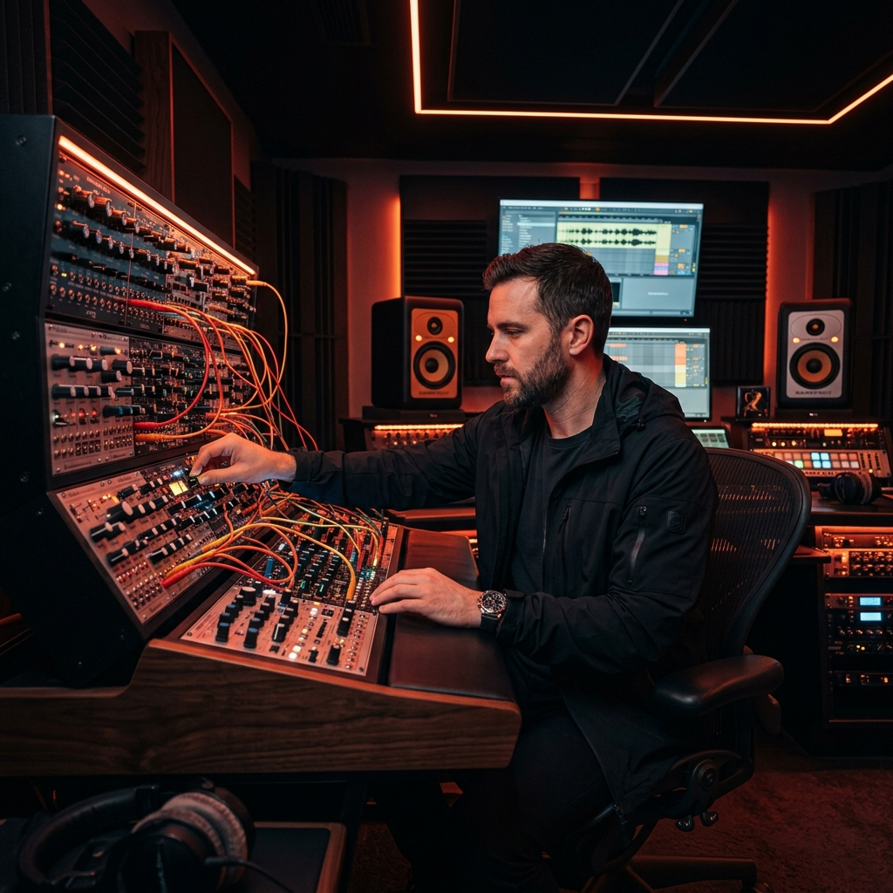
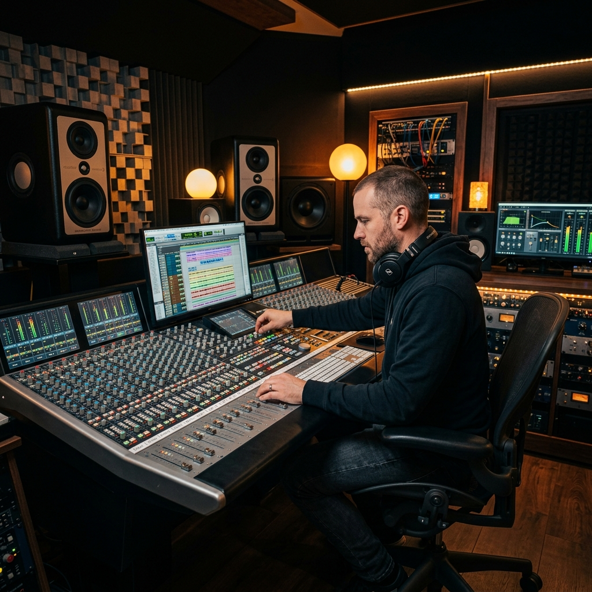

XL-SFT style generation with ADG guidance and DCW correction for more stable harmonics and cleaner transients.
Local-First AI Workstation
Create premium AI music with the same cinematic identity as Lux Studio.
LUX STUDIO fuses ACE-step generation, a real piano-roll workflow, Demucs stem demixing, voice cloning, repainting, and AI mastering in one local production surface. Your files stay local, your workflow stays fast, and your sound quality stays release-ready.
100% Privacy-first
GPU accelerated
Mac / CUDA / AMD / Intel

Platform Walkthrough
See LUX STUDIO in Action
Explore how the local synthesis engine, piano-roll editing flow, and AI mastering work together in one unified production suite.
What makes this a masterpiece platform
We built the product around complete signal-chain control: generation, arrangement, timbre shaping, vocal identity, stem-aware correction, and mastering consistency. You are not using scattered tools; you are scoring through a coherent audio architecture.
AI Master targets practical release profiles: Streaming, Loud, Dynamic, Vocal focus, R&B/Soul, and Hip Hop.
Absolute quantization, lyric-syllable binding, ghost-track visibility, and MIDI round-trip to keep musical structure precise.
Creators in Action
Designed for Real Music Makers
Witness how musicians, engineers, and producers leverage local AI intelligence to compose original tracks, shape dynamic mixes, and clone signature vocals with catalog-level consistency.

Local Compositions
Analogue Synthesis & Control
Fine-tune model parameters and generate custom acoustic waveforms without reliance on cloud server limits.
LoRA Voice Cloner
Vocal Identity & Dubbing
Inject pristine dry references and fine-tune voice identity to maintain custom timbre consistency.

DAW-grade Control
Console Mastering & Mix Repair
Balance, edit, isolate stems, and master tracks against competitive loudness curves directly in one timeline.
Navigate by production stage
Generate
Prompt, lyrics, engine routing, and continuation.
Edit
Song editor, piano roll, repaint regions, and layering.
Separate
Vocal, drums, bass, and instrumental stem extraction.
Clone
Fine-tune voice identity from clean vocal references.
Master
Balance loudness, dynamics, and translation for release.
System design
Read the architecture and quality philosophy in depth.